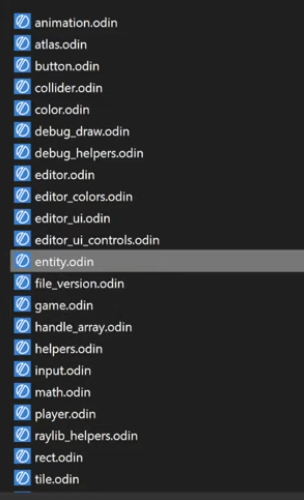

What is a Package
-
"A Package is basically a folder with Odin code in it, where everything inside that folder becomes part of that package".
-
"The Package system is made for library creation, not necessarily to organize code within a library".
-
-
Examples show how using different packages within the same game can create friction, as:
-
You have to be careful with cyclic dependencies.
-
You have to use imported library name prefixes everywhere.
-
-
-
Everything is accessible within the same Package.
-
"The only reason to separate code into different files within the same package is for code organization; in practice it's as if everything were together".
-
In the given example, all files can communicate with each other without "include", since all belong to the same package and will be compiled into a single "thing".
-

. -
"I can simply cut the code and paste it in another file and everything will still work the same".
-
Basic Usage
Creating a package
-
"Packages cannot have cyclic references".
-
"game -> ren".
-
"ren -!> game".
-
-
Keyword
package:-
All files must have a
packageat the top.-
The name does not need to be the same as the folder the file is in, it can be anything.
-
-
All files within the same package must have the same name at the top.
-
If not, it gives a compiler error.
-
-
Which name to use :
-
If you are making a game, the
packagename is not very important. -
But if you are making something intended for use by others, then choose a good and unique name among existing package names.
-
-
Installing a new package
-
Download the folder, put it there, it works.
Using a package
-
From a collection :
import rl "vendor:RayLib" -
From the file system :
-
If no prefix is present, the import will look relative to the current file.
import ren "renderer" // Uses the "renderer" package (folder).import cmn "../common" // goes to the parent package (parent folder) and gets the "common" package (folder). -
Ensure package usage
import "base:intrinsics"
_ :: intrinsics
-
Or
@require import "base:intrinsics"
-
Otherwise the compiler will yell at you if it remains unused. This can happen if you only use certain packages in debug code paths, which are not traversed in a release build.
Collections
-
Odin has the concept of
collectionsthat are predefined paths that can be used in imports. -
core:The most common collection that contains useful libraries from Odin core likefmtorstrings.
Standard Collections
-
Base :
-
Core :
-
Useful and important things, but not fundamental.
-
-
Vendor :
-
3rd party, but included with Odin.
-
"High-quality, officially supported".
-
-
Joren:
-
When the spec is written (around v1's release), it will be clarified that there are 3 standard "collections":
-
base: defined by the language specification, expected to work the same no matter the compiler vendor,
-
core: would be nice if it mirrors upstream Odin's packages for interoperability, but up to the compiler vendor,
-
vendor: things like RayLib, DirectX, entirely up to the compiler vendor what's shipped here,
-
-
You can still opt to fork Odin and tweak things in
base, but at that point you have your own dialect of the language that can no longer necessarily be compiler by another Odin implementation, even if you copy acrosscore.
-
Shared Collection
-
There's a
sharedfolder in the Odin installation folder that you can use for that. It's available as a collection by default (e.g.import "shared:some_package")
Creating new Collections
-
You can define your own collection at build time .
-
You can specify your own collections by including
-collection:name=some/pathwhen running the compiler. -
There's no built-in way to make it "permanent" though.
-
The following will define the collection
projectand put the path at the current directory. -
In the project :
import "my_collection:package_a/package_b"
-
While building :
odin run . -collection:my_collection=<path to "my_collection" folder>
-
If you are using
my_collectionin code, but you forget to specify the build flag, then the project will simply not compile, as Odin doesn't know where "my_collection" is.
Declaration Access
-
All declarations in a package are public by default.
-
@(private="package")/@(private)-
The declaration is private to this package.
-
Using
#+privatebefore the package declaration will automatically add@(private)to everything in that file.
-
-
@(private="file")-
The declaration is private to this file.
-
#+private fileis equivalent to automatically adding@(private="file")to each declaration.
-